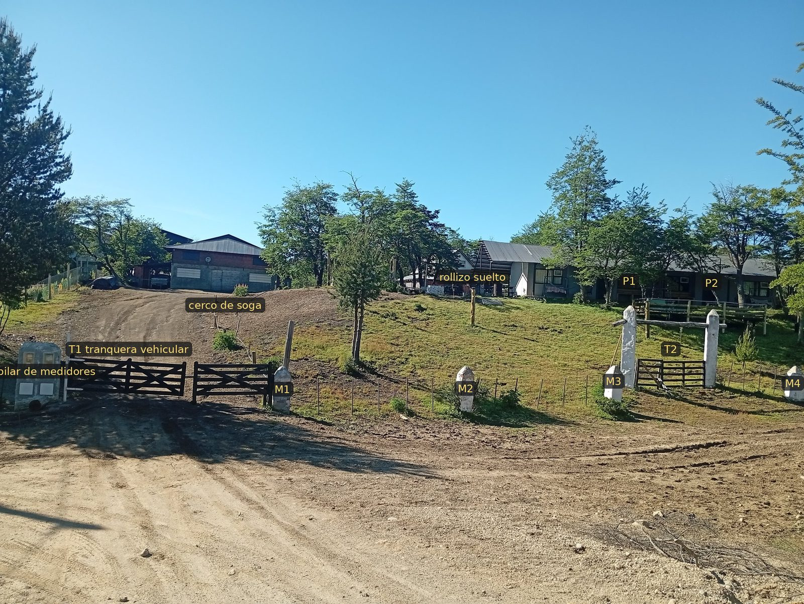
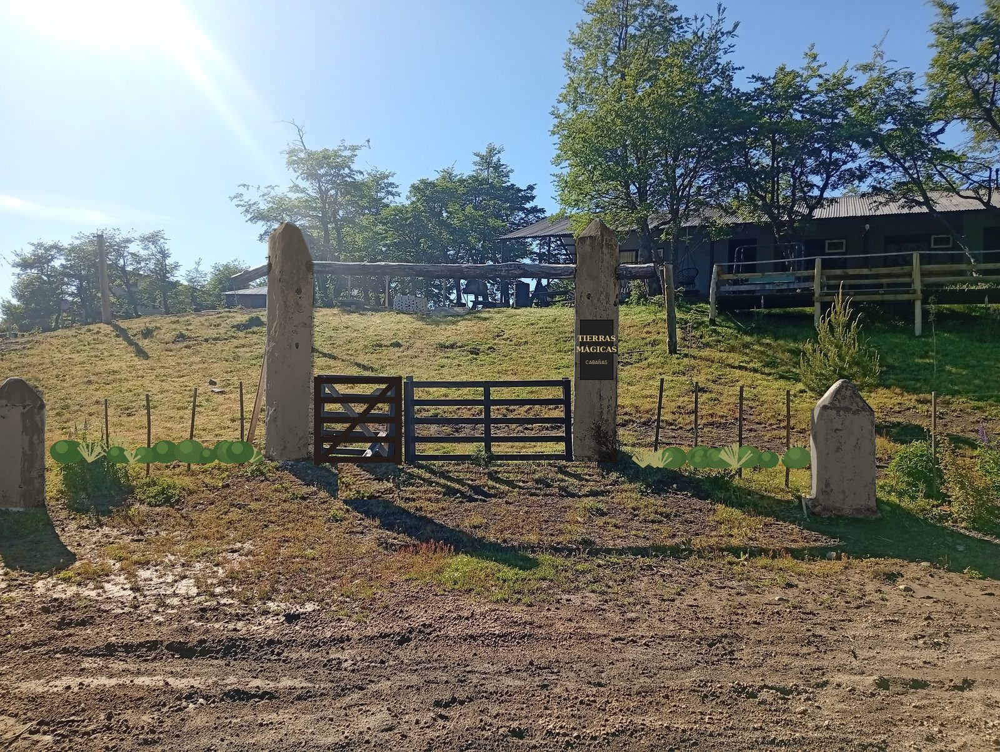
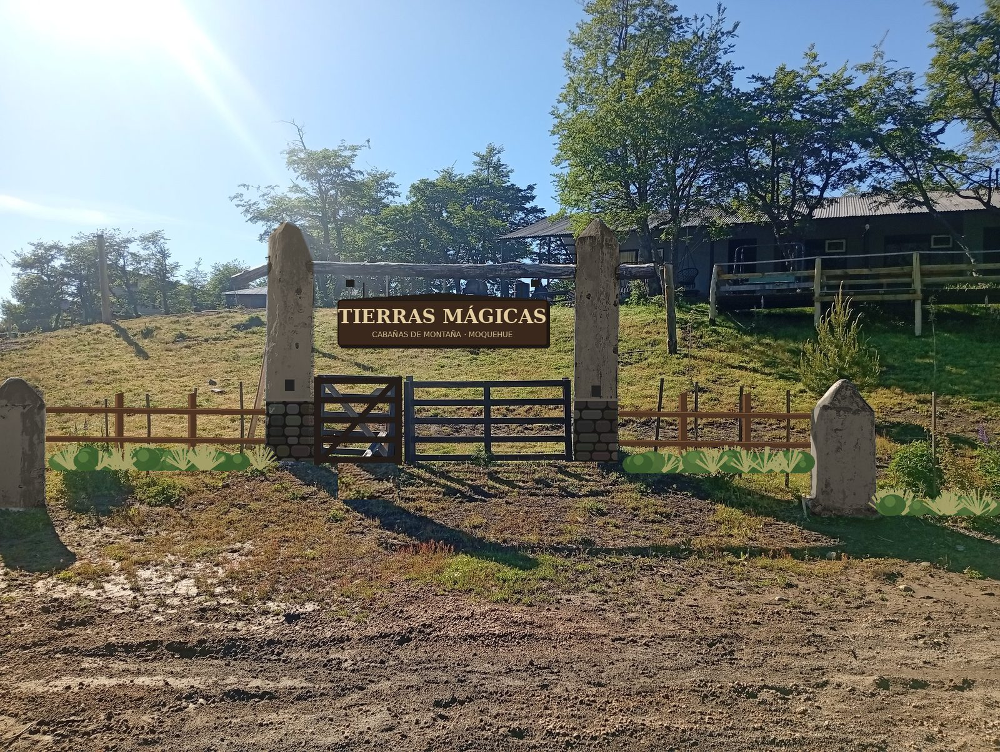
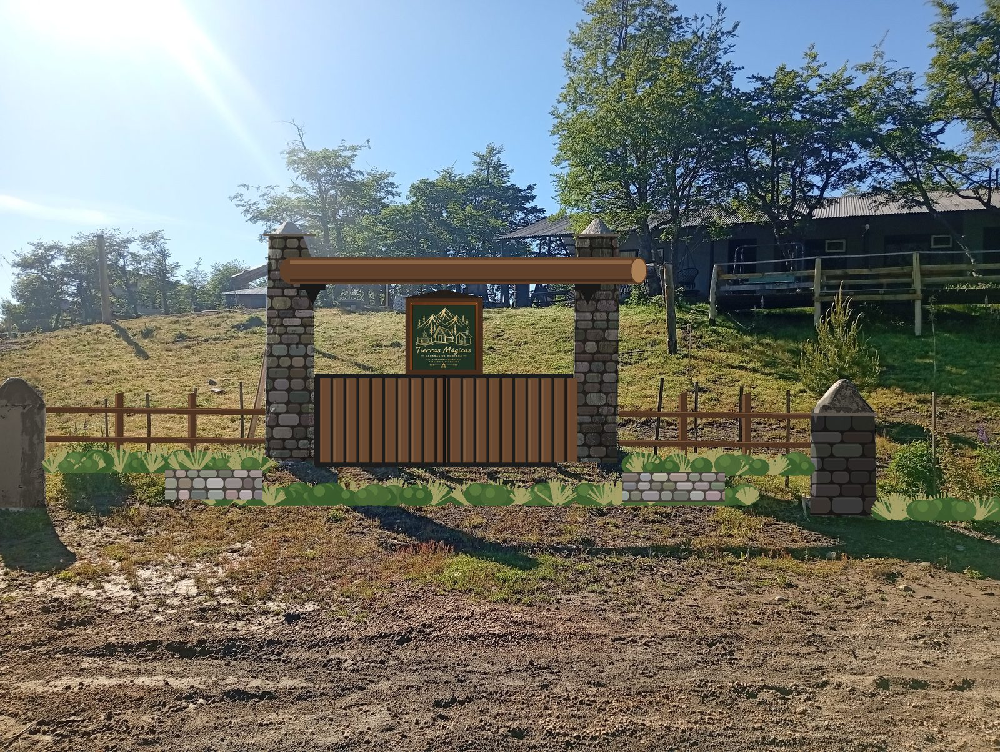
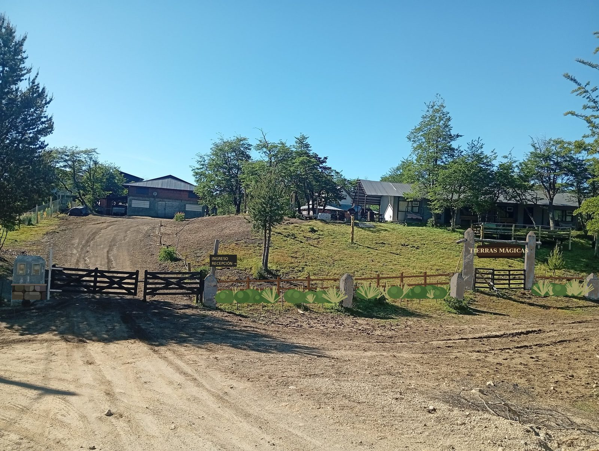
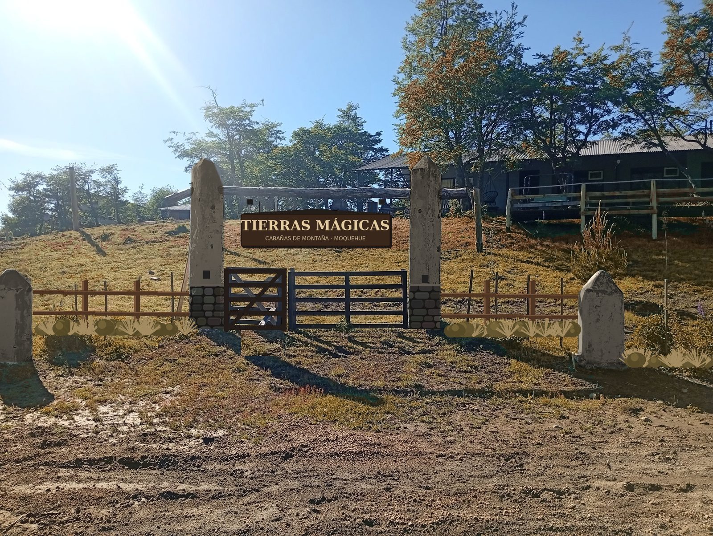
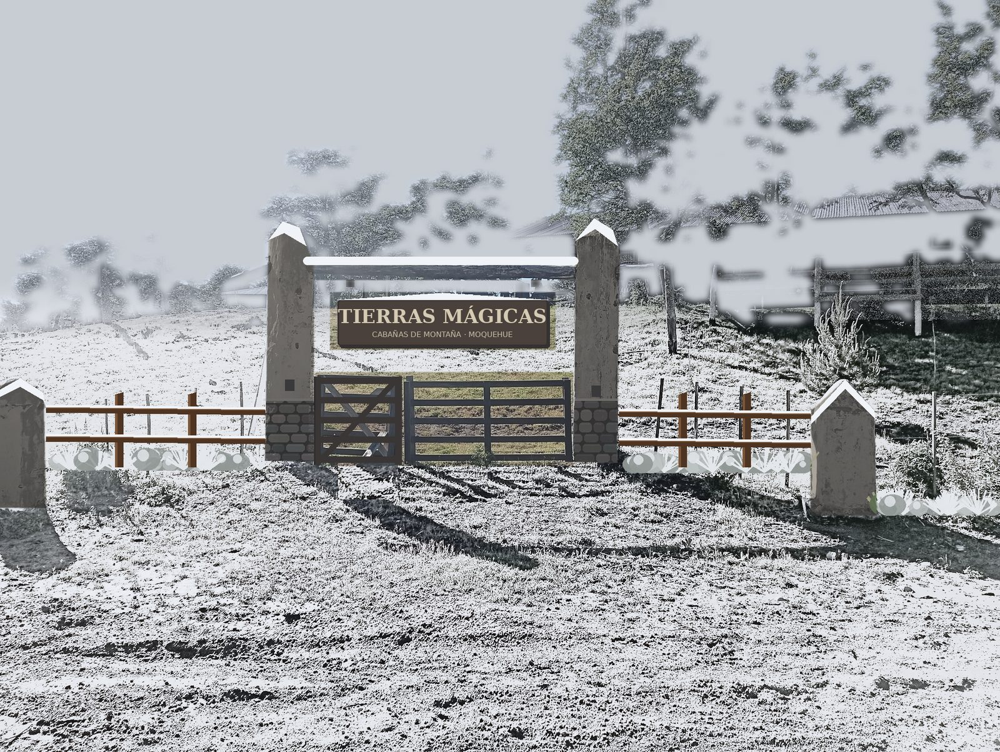
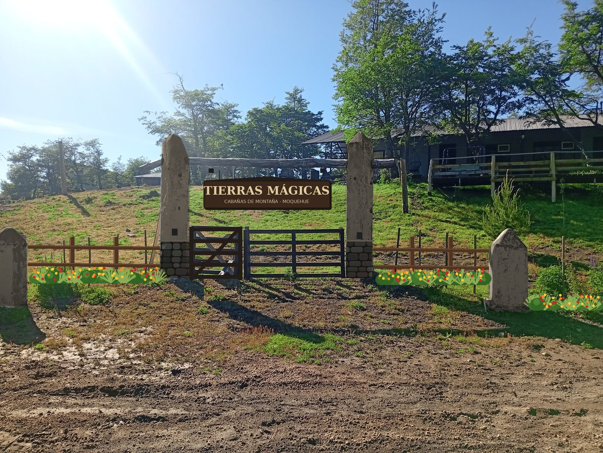

Rediseño y refacción del acceso a Tierras Mágicas
Moquehue, Neuquén. Análisis de las 11 fotos del estado actual, tres alternativas con reuso de lo existente, alternativa recomendada por etapas, cómputo y plan de ejecución. Las imágenes de propuesta son fotomontajes ilustrativos sobre las fotos originales, no renders fotorrealistas.
- Dirección: el pedido dice RP 11 Km 12. La configuración del sistema de reservas y el Welcome Book dicen RP 11 Km 8,2, a 15 km de Villa Pehuenia.
- Texto del cartel: el diseño existente dice «Villa Pehuenia Moquehue – Patagonia Argentina» y el pedido pide «Moquehue – Patagonia Argentina».
HECHO se ve en las fotos · INFERENCIA deducido de lo visible · SUPUESTO valor de trabajo a confirmar · FALTA dato que hay que relevar · DECISIÓN criterio de proyecto
01Diagnóstico arquitectónico y paisajístico


Qué es cada cosa
| Sistema | Elementos | Fotos | Lectura |
|---|---|---|---|
| Acceso vehicular | Tranquera de 2 hojas desiguales con cruz de San Andrés (T1), pilar de hormigón con 2 medidores (P0), mojón como tope (M1), camino de tierra en subida hacia el galpón, cerco de soga a la izquierda | F02, F09, F10, F11 | HECHO Es el ingreso real de autos. Hoy es el menos cuidado: lo primero que ve el huésped es un pilar de medidores de hormigón gris. |
| Acceso secundario | Portal de 2 pilares blancos (P1, P2) con viga de rollizo (V1), portón peatonal de 2 hojas (T2) de madera oscura, sin camino marcado detrás | F01, F03, F07, F08 | INFERENCIA Es el elemento con más presencia del frente, pero no lleva a ningún lado: detrás hay pasto en pendiente. Funciona como portada simbólica. |
| Cerramiento frontal | Mojones blancos de punta (≈ 8, conteo a confirmar), alambrado bajo sobre varillas finas, varios rollizos sueltos clavados, manguera de goteo a la vista | todas | HECHO Tres lenguajes distintos (mojón encalado, varilla y alambre, soga) sin vínculo entre sí. |
Problemas principales
- Jerarquía invertida. El portal, que es lo más vistoso, es el acceso secundario; el ingreso real de autos no tiene identidad ni cartel. HECHO
- Los mojones blancos de punta leen como lápidas. En hilera, sobre pasto y con el encalado manchado, la imagen remite a un cementerio más que a un refugio de montaña. Es la causa principal de la mala primera impresión. INFERENCIA
- El blanco desaparece con nieve. En invierno, pilares y mojones blancos se pierden sobre la nieve y el acceso pierde identidad justo cuando más falta hace orientarse. INFERENCIA
- Terminaciones deterioradas. Encalado descascarado con el ladrillo o revoque a la vista (F11), orificios en los pilares, la hoja chica del portón con una diagonal suelta, ladrillos tirados al pie. HECHO
- Cerca de aspecto provisorio. Alambrado bajo sobre varillas finas, sin travesaños ni postes de peso visual. HECHO
- Borde de ruta indefinido. Suelo recién perfilado y desnudo entre la ruta y la cerca, con charcos y huellas: riesgo de erosión y barro. HECHO
- Especies exóticas en el frente. Pinos jóvenes plantados junto a la cerca y lupinos. Ambos se consideran invasores en la Patagonia andina y los pinos, además, crecerán hasta tapar la vista desde la ruta. INFERENCIA a confirmar con un vivero de nativas o con INTA.
A favor
- Los pilares y mojones existen, tienen escala y su punta inclinada ya descarga la nieve: sirven si cambia la terminación. HECHO
- Los portones son de madera maciza oscura, del mismo lenguaje que el refugio, y se ven reparables. INFERENCIA
- Hay bosque de ñires y lengas, riego por goteo y plantas que ya prendieron (romero, enebros, lupinos): hay base para el paisajismo.
- El frente tiene buena visual desde la ruta hacia las cabañas y el quincho: no hay que taparla.
02Inventario de elementos reutilizables
| ID | Elemento | Cant. | Estado visible | Acción propuesta | Verificar antes |
|---|---|---|---|---|---|
| P1, P2 | Pilares del portal, mampostería u hormigón revocado y encalado | 2 | Descascarado, orificios, aplomo aparente correcto | Reusar. Picar lo flojo, reparar, terminación mineral gris piedra; zócalo de piedra en A2 | Material interno, fisuras, aplomo, fundación |
| P0 | Pilar de medidores (hormigón) | 1 | Sano, gris crudo | Reusar. Zócalo de piedra bajo las cajas; nunca tapar ventanas ni accesos | Consultar a la distribuidora qué se permite |
| M1…Mn | Mojones de punta encalados | ≈ 8 | Descascarados, algunos con ladrillo a la vista | Reusar todos como ritmo de la cerca; cambiar el color | Conteo y numeración en obra; los que estén flojos se reasientan |
| V1 | Viga de rollizo del portal | 1 | Gris envejecido, fisuras normales de secado | Reusar si está sana; anclar a los pilares; sostendrá el cartel | Pudrición en los apoyos (punzón), tipo de fijación actual |
| T1 | Tranquera vehicular, 2 hojas | 2 h | Buena; pintura oscura pareja | Reusar. Lijado, herrajes, impregnante oscuro | Caída de las hojas, bisagras, cierre |
| T2 | Portón peatonal, 2 hojas | 2 h | Hoja chica con diagonal suelta | Reusar; rehacer la pieza dañada | Tablas podridas en la base |
| — | Alambrado y varillas | L1+L2 | Bajo, algo flojo | Reusar como malla de fondo y postes intermedios; retensar | Corrosión, varillas torcidas |
| — | Rollizos sueltos en la ladera | 3-4 | Nuevos, naturales | Reusar como postes de la cerca de travesaños o de luminarias | Para qué se colocaron (¿proyecto previo?) |
| — | Riego por goteo | gl | En uso, a la vista | Reusar; enterrar bajo cobertura y ampliar | Caudal disponible |
| — | Plantas instaladas (romero, enebros, lupinos) | gl | Sanas | Mantener romero; mantener enebros lejos de construcciones; no ampliar lupinos | — |
| — | Diseño del cartel con logo | 1 | Existe el arte | Usar el panel del logo; no construir el pórtico nuevo del diseño (el portal existente cumple esa función) | Texto de ubicación definitivo |
03Tres alternativas
Las tres comparten la misma identidad: pilares y mojones en gris piedra cálido en lugar de blanco, madera oscura, letras en tono crema y vegetación nativa baja. Cambia la cantidad de intervención.

Alternativa 1 · Refacción económica
- Picado, reparación y pintura mineral gris piedra en pilares y mojones.
- Reparación de la hoja chica del portón; lijado e impregnante en ambos portones.
- Retensado y alineación del alambrado; retiro de ladrillos, ramas y piezas sueltas.
- Placa metálica oscura con el nombre en el pilar P2 y placa «Ingreso / Recepción» en la tranquera.
- Matas nativas puntuales al pie de los pilares.
- Un aplique en el pilar de medidores.
Resultado: elimina el efecto lápida y el descuido. No resuelve la jerarquía ni la cerca provisoria.

Alternativa 2 · Patagónico natural RECOMENDADA
- Todo lo de la alternativa 1.
- Zócalo de piedra local de ~0,60 m en P1, P2 y en el pilar de medidores, bajo las cajas.
- Cerca rural de 2 travesaños sobre postes de rollizo cada ~2,5 m, delante del alambrado existente, que queda como malla de fondo.
- Tabla tallada colgada de la viga, con botaguas, y el nombre en letras crema.
- Faja de plantación nativa de 0,8 m al pie de la cerca, sobre el goteo existente y con cobertura.
- Luz cálida de 2700 K hacia abajo: 2 apliques bajo la viga sobre el cartel, 1 por pilar y 1 en la tranquera vehicular.
- El cerco de soga del camino interno pasa a ser de un travesaño.
Resultado: frente unificado y legible con nieve, con los dos accesos identificados.

Alternativa 3 · Refugio de montaña premium
- Pilares del portal revestidos de piedra en toda la altura, con remate inclinado.
- Viga nueva de rollizo de Ø 25-30 cm con ménsulas metálicas negras.
- Portón peatonal nuevo: bastidor metálico negro con tablas verticales.
- Panel con el logo existente colgado de la viga.
- Pircas bajas de piedra seca a los lados del portal; cerca de travesaños; paisajismo más denso.
- Iluminación completa, con luz rasante y baja sobre la vegetación.
Resultado: el mayor impacto, pero reemplaza piezas que todavía sirven (viga y portón). Solo se justifica si la verificación los descarta.
04Comparación
| Criterio | A1 Económica | A2 Patagónico natural | A3 Premium |
|---|---|---|---|
| Inversión relativa | Baja (≈ 1×) | Media (≈ 3 a 4×) SUPUESTO | Alta (≈ 7 a 10×) SUPUESTO |
| Reuso de lo existente | Total | Total, con agregados | Parcial: reemplaza viga y portón peatonal |
| Jornales estimados | 6-10 | 15-25 | 30-50 |
| Mano de obra propia | Casi todo | La mayoría; piedra y electricidad contratadas | Requiere pircador y herrero |
| Plazo | 1-2 semanas | 3 etapas en 5 meses | 2-3 meses de obra |
| Quita el efecto lápida | Sí | Sí | Sí |
| Identifica el ingreso vehicular | Con placa | Con placa, luz y zócalo | Sí |
| Identidad con nieve | Media | Buena | Muy buena |
| Mantenimiento | Repintar cada 3-5 años | Impregnante cada 2-3 años en la madera | Igual que A2, más el herraje |
| Riesgo de sobredimensionar | Nulo | Bajo | Medio |
Las relaciones de inversión salen de los jornales y de las cantidades del cómputo, no de precios. Se reemplazan por montos cuando lleguen las cotizaciones.
05Vistas desde la ruta y desde el interior


06Alternativa 2 en las cuatro estaciones





Los cambios de estación se simularon recoloreando la foto de verano. Los pinos aparecen recoloreados igual que los ñires aunque en la realidad no cambian de color.
07Esquema de distribución de la cerca
Planta esquemática, sin escala. Ubicación relativa tomada de F09 y F01. Las longitudes L1, L2 y L3 se miden en obra y alimentan la planilla.
08Detalles constructivos
09Paisajismo
Criterio: franja continua y baja al pie de la cerca, en grupos irregulares de 3 a 5 plantas de la misma especie y con piedras del lugar semienterradas. Nada supera 0,8 m en el triángulo de visibilidad de la tranquera ni tapa los pilares. Nada se planta en la banquina que usa la máquina vial para la nieve.
| Especie | Origen | Rol | Altura | Estación fuerte | Notas |
|---|---|---|---|---|---|
| Coirón blanco Festuca pallescens | Nativa | Gramínea base, mata | 0,3-0,5 m | Otoño-invierno pajizo | Muy rústica; bajo mantenimiento |
| Calafate Berberis microphylla | Nativa | Arbusto bajo-medio | 0,6-1,2 m | Primavera amarilla, fruto en verano | Espinoso: lejos del paso peatonal; sirve de barrera junto a la cerca |
| Michay Berberis darwinii | Nativa | Arbusto | 0,8-1,5 m | Primavera naranja | Solo fuera del triángulo de visibilidad |
| Chaura Gaultheria mucronata | Nativa | Cubresuelo arbustivo | 0,3-0,6 m | Bayas en otoño | Aguanta media sombra bajo ñires |
| Amancay Alstroemeria aurea | Nativa | Perenne de flor | 0,4-0,8 m | Verano naranja | Desaparece en invierno; reemplaza al lupino como flor de verano |
| Palo piche Fabiana imbricata | Nativa | Arbusto de acento | 0,8-1,5 m | Fin de primavera blanca | Tolera suelo pobre y seco |
| Notro Embothrium coccineum | Nativa | Acento rojo puntual | arbóreo | Primavera roja | Verificar si prospera a la altura de Moquehue; solo atrás de la cerca |
| Ñire Nothofagus antarctica | Nativa (existente) | Árbol, color otoñal | — | Otoño rojo | Conservar todos los sanos; dejar crecer los renovales del lado derecho (F05) |
| Romero, enebros | Exóticas (existentes) | Mantener | — | — | No sumar más enebros: son muy inflamables |
| Pinos jóvenes, lupino | Exóticas invasoras | No ampliar | — | — | DECISIÓN DEL DUEÑO reemplazar los pinos del frente por nativas antes de que superen 2 m |
Comprar en un vivero de nativas de la zona (Villa Pehuenia, Aluminé, Junín o Bariloche) y pedir que confirmen especie, procedencia y altura de la zona. Plantar en otoño (marzo-abril) o temprano en primavera; si se planta en verano, con goteo diario las primeras semanas. Cobertura de 5 cm de chip de corteza o grava del lugar para evitar erosión y malezas.
10Iluminación
- Temperatura de color 2700 K, LED de bajo consumo. Toda la luz va dirigida hacia abajo para conservar el cielo estrellado, que también es parte de la experiencia.
- Equipos: IP65 como mínimo en pilares y bajo la viga, IP67 si quedan a ras del suelo; cuerpo de aluminio o bronce, aptos para temperaturas bajo cero.
- Nada de balizas bajas en el borde de la ruta: la máquina vial y la nieve las rompen o las tapan. Las luces van en pilares, viga y tranquera.
- Alimentación: circuito propio desde el tablero del establecimiento, con diferencial, fotocélula y temporizador (por ejemplo, del anochecer a las 00:30). Nunca desde el pilar de medidores antes del medidor. Lo instala un electricista matriculado.
- Solar: no se recomienda como principal, porque en invierno hay pocas horas de sol y nieve sobre los paneles.
11Materiales y cómputo preliminar
Las cantidades están en la planilla computo_presupuesto_acceso.xlsx con fórmulas: se cargan las medidas reales en la hoja 1_Relevamiento y el cómputo se recalcula. Los valores de abajo salen de un escenario supuesto (L1 = 25 m, L2 = 30 m, L3 = 20 m, 8 mojones, pilar de 0,35 × 2,8 m) y solo sirven para dimensionar el orden de magnitud. SUPUESTO
| Rubro | Ítem | Unid. | A1 | A2 | A3 | Origen |
|---|---|---|---|---|---|---|
| Pilares y mojones | Reparación de revoque | m² | 1,9 | 1,9 | 1,1 | Reutilizado |
| Pintura mineral gris piedra, 2 manos | m² | 19,0 | 17,4 | 11,2 | Nuevo | |
| Revestimiento de piedra local | m² | — | 2,5 | 10,2 | Nuevo o del predio | |
| Portal | Anclaje de viga existente | u | 1 | 1 | — | Reutilizado |
| Viga nueva + ménsulas | u | — | — | 1 | Nuevo | |
| Portones | Restauración (hojas) | hoja | 4 | 4 | 2 | Reutilizado |
| Portón peatonal nuevo | u | — | — | 1 | Nuevo | |
| Cerca | Retensado de alambrado | m | 55 | 55 | 55 | Reutilizado |
| Postes rollizo Ø 10-12 × 2,2 m | u | — | 24 | 24 | Nuevo (+ rollizos sueltos) | |
| Travesaños Ø 8 cm | m | — | 121 | 121 | Nuevo | |
| Travesaño del camino interno | m | — | 20 | 20 | Nuevo | |
| Pirca de piedra seca | m | — | — | 6 | Nuevo | |
| Señalética | Placa, tabla o panel con logo + placa de ingreso | u | 2 | 2 | 2 | Nuevo |
| Iluminación | Luminarias | u | 1 | 5 | 9 | Nuevo |
| Cable en caño + zanja | m | 10 | 35 | 65 | Nuevo | |
| Paisajismo | Plantas nativas | u | 40 | 132 | 198 | Nuevo |
| Cobertura 5 cm | m³ | 0,7 | 2,2 | 3,3 | Nuevo o del predio | |
| Ampliación de goteo | m | 17 | 55 | 83 | Reutilizado + ampliación |
12Presupuesto comparativo
No se cargaron precios: la planilla multiplica el cómputo por el precio unitario de cada cotización, en la hoja 3_Presupuesto. Está separada en materiales reutilizados (solo mano de obra de recuperación), materiales nuevos, mano de obra propia, mano de obra contratada, herramientas y fletes, iluminación, paisajismo e imprevistos (10 %).
Qué cotizar (3 proveedores por rubro)
- Pintura mineral o al silicato para exterior en gris piedra: precio por litro y rendimiento.
- Piedra local para el zócalo (m²) y mano de obra de pircador (m² colocado).
- Postes de rollizo impregnado de Ø 10-12 × 2,2 m y travesaños de Ø 8 cm o media caña, con guía forestal si la madera es nativa.
- Impregnante con filtro UV, herrajes y tornillería galvanizada.
- Cartel: tabla tallada con botaguas y cadenas, o panel del logo (taller de carpintería o de cartelería).
- Luminarias IP65/IP67 de 2700 K, fuente, fotocélula y temporizador; jornales de electricista matriculado.
- Plantas nativas en envase de 1 a 3 L y chip de corteza.
Quién ejecuta
| Trabajo | Propio | Profesional |
|---|---|---|
| Limpieza, retiro de ladrillos y ramas, perfilado del borde | Sí | — |
| Lijado e impregnante de portones; reparación de la hoja chica | Sí | — |
| Picado y pintura de pilares y mojones | Sí | — |
| Retensado de alambrado, postes y travesaños | Sí, con ayudante | — |
| Plantación y ampliación del goteo | Sí | Consulta al vivero |
| Zócalo de piedra y pircas | No recomendado | Albañil o pircador |
| Anclaje de la viga y colgado del cartel | — | Verificación de arquitecto o ingeniero |
| Instalación eléctrica | — | Electricista matriculado |
| Cualquier trabajo en el pilar de medidores | — | Consulta previa a la distribuidora |
13Plan de ejecución por etapas (alternativa 2)
- Etapa 0 · Relevamiento y decisión (diciembre, 1 semana). Medir L1, L2 y L3, los pilares y los mojones; tomar las fotos desde el interior; verificar viga y pilares; consultar a la distribuidora por el pilar de medidores; definir dirección y texto del cartel; pedir cotizaciones. GATE Seguir solo con medidas, verificación y precios.
- Etapa 1 · Imagen para la temporada alta (diciembre, antes de enero). Equivale a la alternativa 1: limpieza, reparación y pintura gris piedra (antes, una muestra de 50 × 50 cm en un mojón), portones, retensado y placa de ingreso vehicular. Mano de obra propia. Quita el efecto lápida desde el primer huésped de enero.
- Etapa 2 · Cerca y cartel (febrero-marzo). Postes y travesaños, tabla colgada de la viga ya verificada y anclada, travesaño en el camino interno, zanja y cañería para la iluminación.
- Etapa 3 · Piedra, luz y plantas (marzo-abril, antes de las heladas). Zócalos de piedra con temperatura favorable para el mortero, conexión y puesta en marcha de las luces, plantación de otoño con cobertura y goteo.
- Etapa 4 · Opcional (siguiente temporada). Elementos de la alternativa 3 que hagan falta según el resultado, por ejemplo el portón peatonal nuevo si el existente no se recupera bien.
14Riesgos, supuestos y datos que faltan
| Tipo | Descripción | Mitigación |
|---|---|---|
| FALTA | Medidas reales: longitudes del frente, altura y sección de pilares y mojones, ancho de las tranqueras | Etapa 0; la planilla se recalcula sola |
| FALTA | Fotos desde el interior hacia la ruta | 2 fotos a la altura de los ojos |
| FALTA | Estado interno de la viga y de los pilares | Punzón en los apoyos de la viga, aplomo, golpeteo del revoque |
| SUPUESTO | Que los pilares sean de mampostería revocada (por el ladrillo a la vista en F11) | Confirmar picando un sector |
| SUPUESTO | Que los postes del alambrado sean varillas finas de madera o hierro | Ver en obra; los torcidos se reemplazan |
| Riesgo | El color gris piedra puede verse frío o demasiado oscuro en el lugar | Muestra en un mojón, mirada a distintas horas antes de pintar todo |
| Riesgo | La máquina vial golpea mojones y plantas del borde al despejar nieve | Banquina libre de 1-1,5 m; nada nuevo en esa franja |
| Riesgo | Cartel con viento: golpea o se suelta | Dos puntos fijos abajo, botaguas y verificación de la viga |
| Riesgo | Incendio de interfase en el bosque | No sumar coníferas ni enebros junto al portal; vegetación baja y regada |
| Riesgo | Plantas que no prenden por helada o por la fecha de plantación | Plantar en otoño, de vivero local, con cobertura |